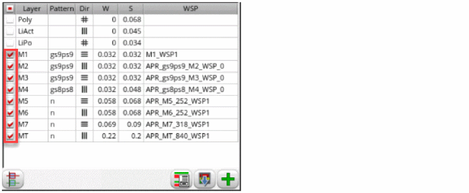
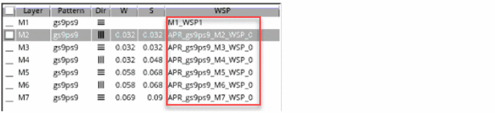
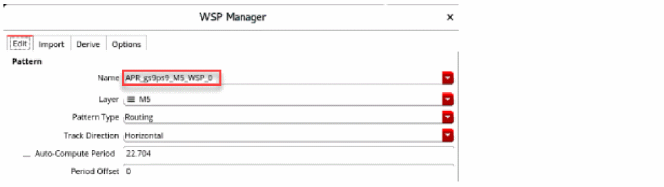
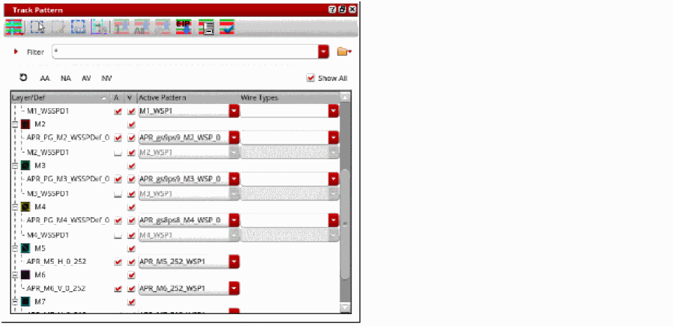

Generating Width Spacing Patterns for Standard Cell Routing
In automated Routing Technology, there are three methods for generating WSPs.
This topic covers the method of generating WSPs automatically. For information on generating WSPs using WSP Manager and importing WSPs, see
To automatically generate WSPs:
- Open a design in Layout MXL.
-
Choose Window – Assistants – Routing.
Alternatively, right-click anywhere on the layout window menu bar and choose Assistants – Routing. The Routing Assistant is displayed. - In the Setup tab, select the bottom and top routing layers from the Bottom and Top drop-down list. Specifying valid routing layers updates the WSPs visible in the table and specifies which layers the router should use for routing.
-
Select the required routing layers by clicking the check box in the layer table.WSPs are generated only on the selected layers. You can select all layers or specific ones. You can also select one or more layers by clicking the check box next to the layer name. The check box selection indicates for which layers you want to generate WSPs.
Multiple active WSP definitions are not allowed on the same layer. Multiple widths are supported in the same WSP (coincident tracks) but not multiple WSP definitions. This is because, in such cases, it is difficult to assume that all the effective tracks are DRC clean in terms of color and spacing. -
Leave the Pattern column of the layer table blank for the
M5layer. The Filter field supports regular expressions to help you find the cells if many cells are present. If the standard cell power rail layer does not match a uniform width and spacing track pattern, it is appropriate to either use add_tracks with width and spacing parameters or use the Wire Assistant Derive functionality to create the WSPs for that layer.
The WSPs are automatically generated from the tracks that Innovus generates when the Pattern field is left blank. If there are existing WSPs, the Innovus tracks are not generated. Ensure that all the WSPs are inactive in the Track Pattern assistant before doing this step.
If the Pattern field is not blank, WSPs are generated based on the pattern with the WSP pattern generator. The Pattern field determines whether WSPs are generated from Innovus or from a pattern.
WSPs generated from Innovus do not have a wireType assigned. They can be used as a starting point in WSP Manager and the wireType can be added there. -
Specify a pattern for example,
gs9ps9, for metal layers in the Pattern column of the layer table. The patterngs9ps9means that the track wireTypes areground,signal,signal,signal,signal,signal,signal,signal,signal,signal,power,signal,signal,signal,signal,signal,signal,signal,signal,signal. It generates WSPs based on the pattern with the WSP pattern generator.
The Map WSP Wire Types to Symbols Form informs you which character represents the wireType in the WSP that is to be created. The particular character or symbol is used in the pattern string. -
Click Auto-generate WSPs
 at the bottom of the Routing assistant. WSPs are automatically generated for the selected metal layers.
at the bottom of the Routing assistant. WSPs are automatically generated for the selected metal layers.
 - Click Snap pins to WSPs and check if the IO pins can snap to the WSPs.
-
Select any layer in the layer table to view its WSP attributes.
Multiple active WSP definitions are not allowed on the same layer. However, multiple widths in the same WSP (coincident tracks) are supported but not multiple WSP definitions. The is because you cannot assume all the effective tracks are DRC clean, for example, in terms of color and spacing. -
Click the Show WSP Manager button at the bottom of the Routing assistant.
The WSP attributes of the selected layer are displayed.
 - Choose Window – Assistant – Track Pattern from the layout window menu bar to open the Track Pattern assistant.
-
Click the Show All check box.
You can see the pattern-based auto-generated WSPs prefixed withAPR_.

Related Topics
Configuring Standard Cell Router Settings
Checking Layout Routability after Running Standard Cell Placer
Running Signal Routing for Standard Cells
Viewing and Analyzing Standard Cell Routing Results
Routing Assistant User Interface for Standard Cell
Return to top